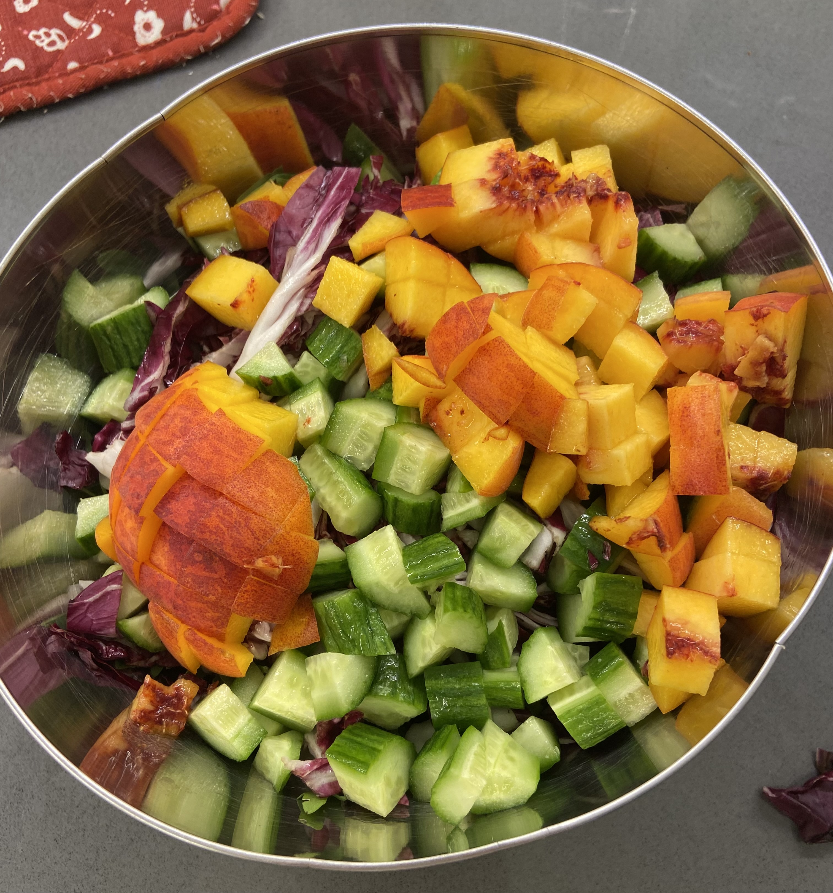
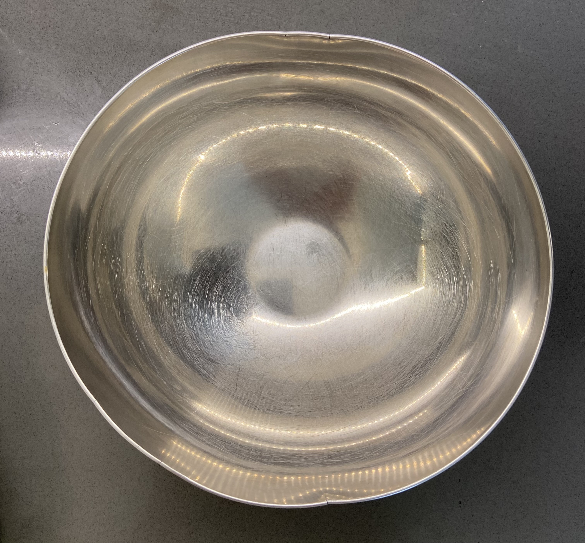
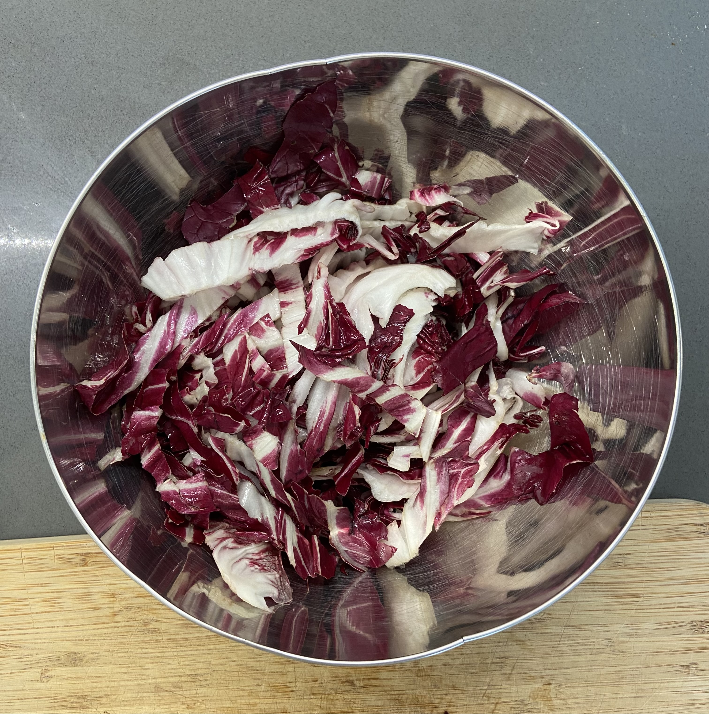
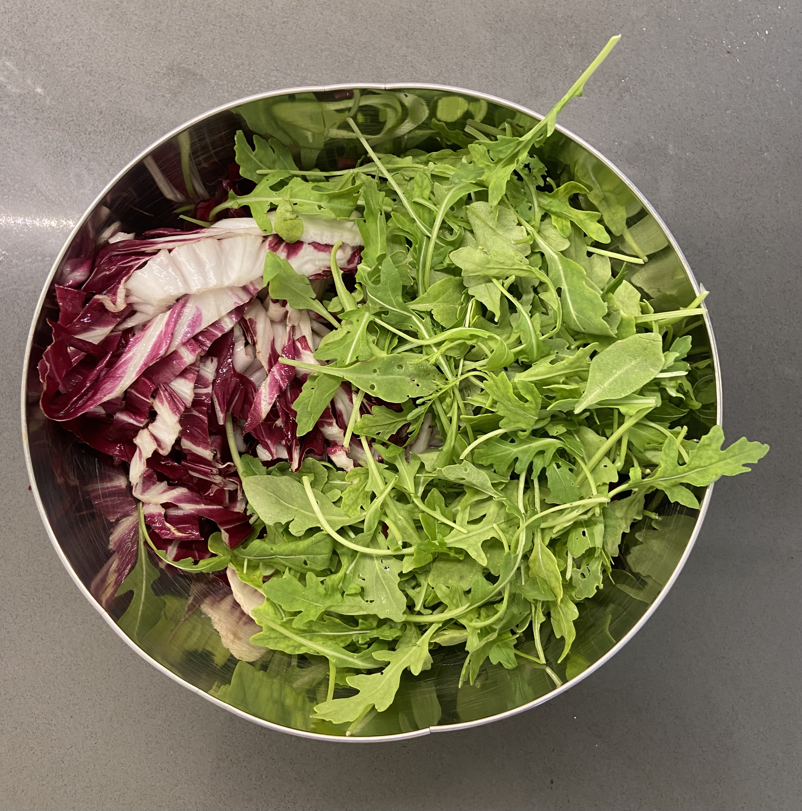
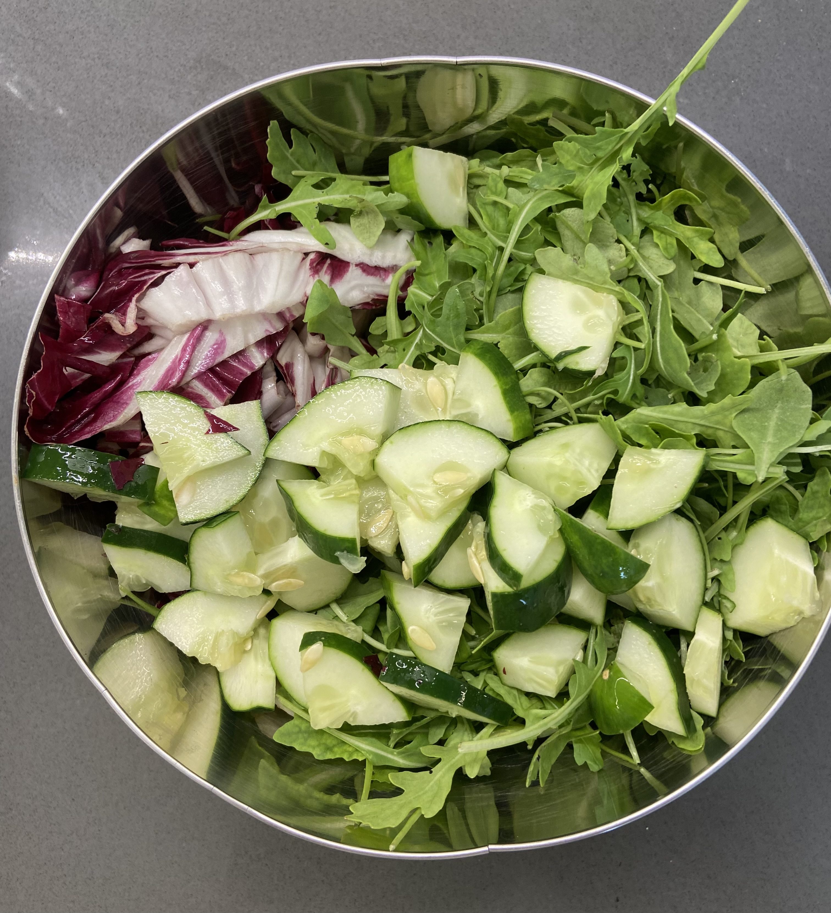
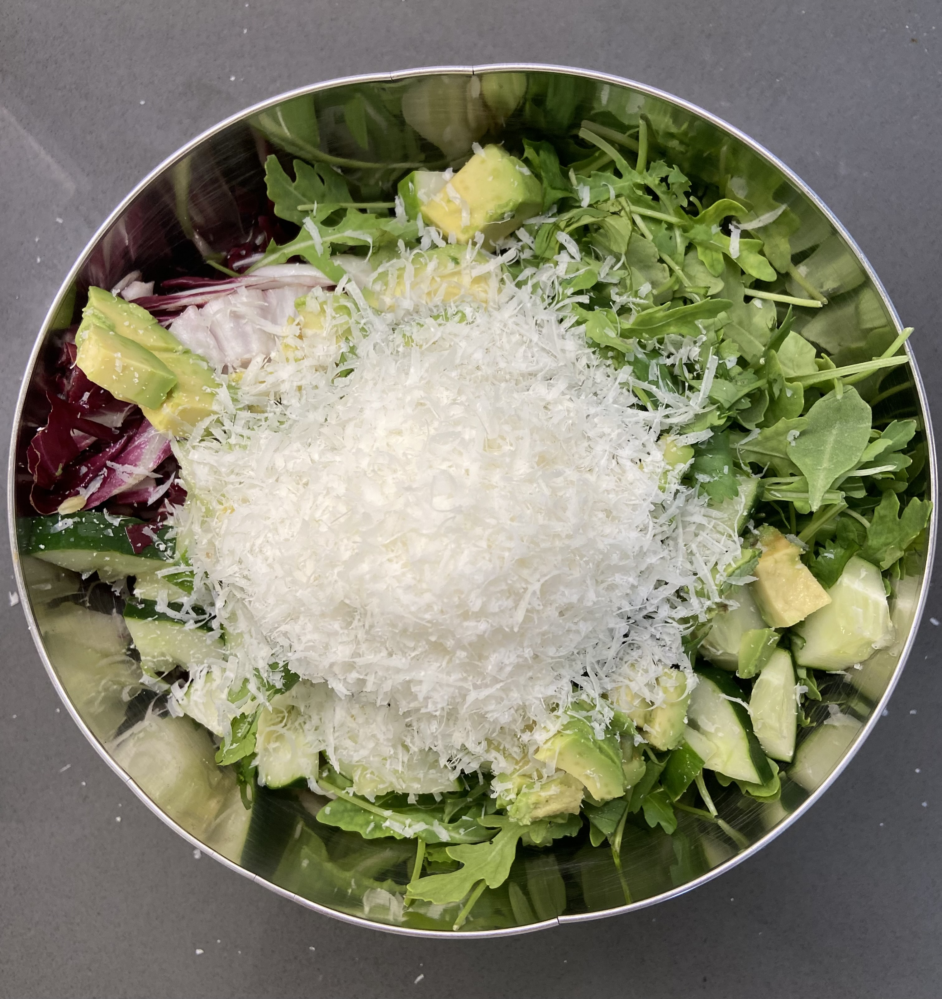
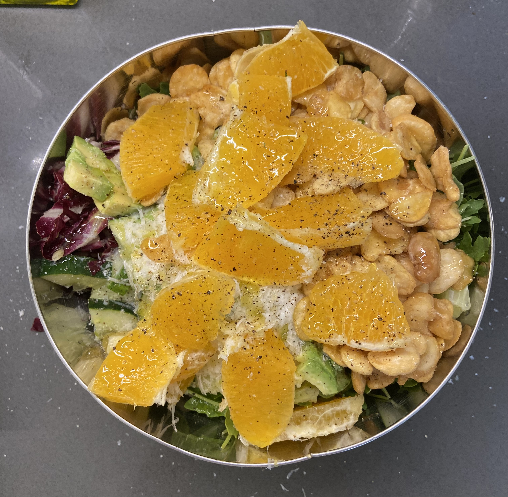
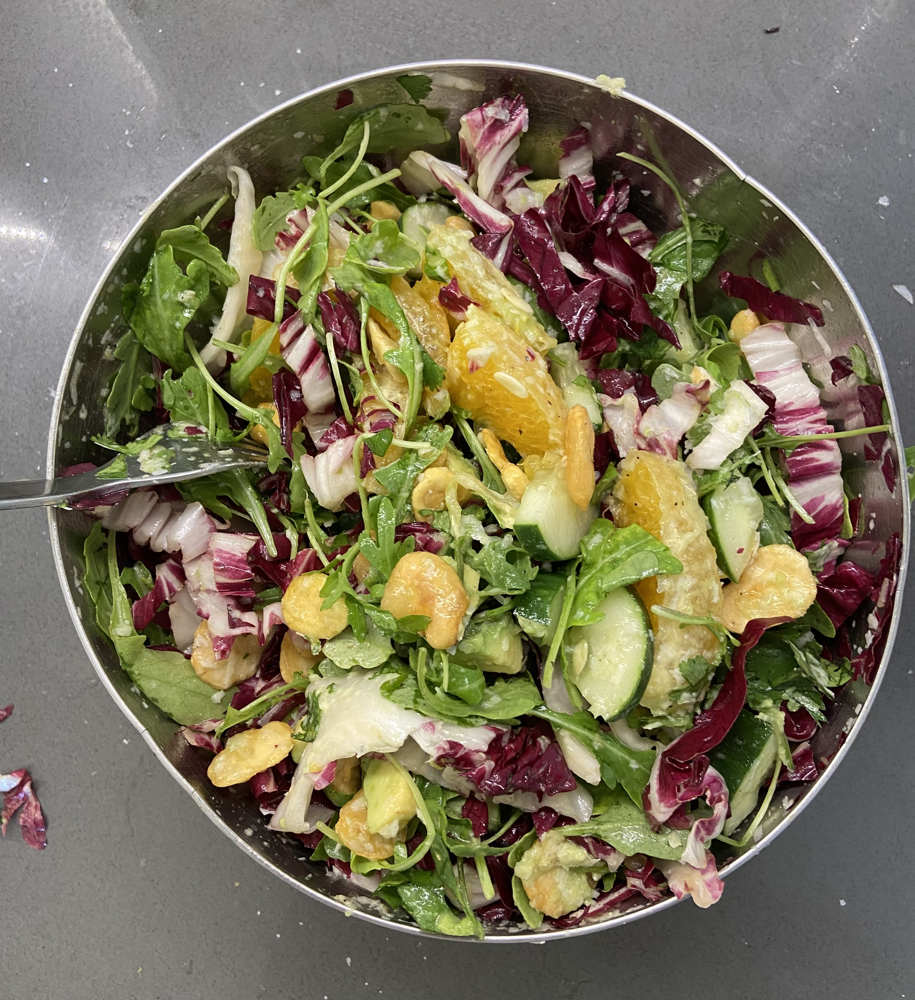

This is my favorite salad. Currently I eat it around 4 times a week, and it has a sort of load bearing psychological role in my diet. The recipe will be outlined and photographed extensively, and through this we will learn the 4 key aspects of a salad: crunchiness, wetness, crispyness, and acidity.
 A salad, before mixingStarting from the very beginning, one must have a suitable bowl. I am rather fond of the one below, because it occupies the synthesis of two very important yet opposing attributes: large enough to mix your salad in, yet not large enough to be unwieldy to eat out of. Yes that's right, this will be a one bowl recipe.
 Ikea metal mixing bowl, slightly bentOur very first ingredient will be 1/2 of a head of radicchio, chopped into long, thin, strips. You'll find the half ingredient to be a theme throughout this recipe, allowing one to easily purchase the needed supplies for two consecutive salads.
I will note that radicchio heads vary substantially in size, so choose wisely depending on your appetite for large salads, and the size of your bowl. They make both long and round radicchio heads; only round radicchio is good (radicchio di chioggia, for real lettuceheads).
We follow this up with an equal portion of arugula.
 Pictured: Jayleaf California Wild Arugula™, though if you don't live near an insane person store like bi-rite, any pre-washed arugula will doThese two brave soldiers comprise the base of our salad.
A note on lettuce typesWhile on can of course use whatever lettuce they might like to construct a salad such as this one, I would make the following remarks. First: on arugula. This is the only flavorful lettuce variety, so it simply doesn't make sense to use anything else. And on radicchio: this is the crunchiest lettuce by a very wide margin, so it once again doesn't make sense to use anything else.
With those two notes in mind, choose any lettuce that you think you may enjoy.
Our base is followed by 1/2 of a cucumber. The cucumber is both very wet and very crunchy, so I hold it in quite high esteem as a salad ingredient.
A note on cucumber typesYour average fancy san francisco grocery store will carry at most 4 major varietals of cucumber: Generic, English, Persian, and Japanese. This breadth of options may befuddle the uninformed cucumber buyer, so we will detail their respective virtues below.
- The generic, unlabeled "cucumber" is the one pictured above. One will observe somewhat pronounced seeds, a slight lack of color, and strong separation between the flesh and the watery inside.
- The English cucumber is longer, thinner, and often wrapped in plastic. I consider it to be superior to the generic cucumber in most ways, and is usually only very slightly more expensive. Purchase this cucumber.
- & 4. Persian and Japanese cucumbers are both much smaller than a normal cucumber. This can be a virtue in that you can use an entire cucumber or two for each salad, and not need to worry as much about using the other half of a large cucumber quickly. It does not, however, make up for their key failing, which is costing three times as much as an English cucumber for no discernable improvement in flavor or texture.
We continue our salad with 1/2 of an avocado. The half avocado is removed from the peel with a spoon before being diced (usually more neatly than seen above). Avocados are generally really delicious, add a nice fattiness to offset an otherwise quite crisp salad, and can be soft enough to kind of congeal onto the other salad ingredients in a way that really helps the overall cohesion, especially with a very ripe avocado.
The salad pictured above includes some roughly chopped cilantro, which I felt added a certain savory depth, but is not by any means a standard ingredient.
I consider cucumber and avocado to be the two "base" vegetables of my salad, in the sense that everything listed in this recipe I will leave out fairly frequently, but I nearly always include these two items.
Next, parmesan. This is more on the optional side of things, but is really quite nice. Regarding quantity, parmesan is one of those things that's difficult to use too much of, but I like to use an amount such that you can really see and taste it in the final product, which is often more than you'd think.

Next, a crispy element. Pictured above are crispy fava beans, purchaseable from your local Rainbow Grocery Cooperative. However I think of this as a generic item slot, the crispy slot, that, while optional, can really elevate the salad through diversity of texture. My second favorite item here is likely marcona almonds, roughly chopped, available at most grocery stores.
This is also the place in a salad that a crouton would traditionally occupy, and one could certainly include a good crouton. However crafting such a thing would likely require you to turn on your oven and apply some process to small pieces of bread, which personally sounds far too time consuming for what is otherwise a 5-minute recipe. As far as I'm aware, any croutons one could purchase at the store are simply not worth including.
I've seen more savory salads that include those bits of fried garlic or onion that many restaurants have, and this has always seemed like an appealing concept, one that I perhaps at some point might try. Currently, however, I have an absolutely massive tub of crispy fava beans in my cabinet to get through. And they have protein or something I assume.
A word of caution: Those among us who aspire to greatness, the megalomaniacs, may at some point in their salad journey attempt to include MULTIPLE crispy elements in their salad. This is hubris: it cannot be done. A second item, of a similar and yet subtly different level of crispiness, creates a kind of textural confusion in one's mouth that simply cannot be salvaged. With that in mind, oranges:
We're shaping up to have a pretty decent salad. At this point, you can include basically anything. I had seen a photo of a grapefruit salad the other day so was feeling a longing for citrus and added this orange. I can't say I strongly recommend it however. While it had a great texture (very wet), the double-citrus thing I had going on with it and the lemon dressing didn't really do it for me.
It's getting to the end of stonefruit season and I find something in that genre often makes a really great addition, as pictured with peach in the very first photo.
Dressing and other ephemeral elementsTo finish the salad, I apply the following ingredients:
- Half of a lemon, squeezed. If you've chosen a particularly small lemon, you may opt to include the entire thing.
- A drizzle of olive oil. I have no conception of quantity here as I have one of those nice olive oil bottles with a little slow pouring spout where I can kind of just go to town in a certain way, so use your judgement here. at least 3x less than the amount of lemon juice.
- 4 grinds of pepper (different pepper grinders of course vary widely, adjust to taste)
- 7 grinds of salt (same as above. I have heard from reliable sources that the difference between a tolerable and a great salad is fighting ones natural inclination to undersalt.)
Some people do enjoy mixing this into a 'dressing' before applying it to the salad, but given that the salad itself gets quite thoroughly mixed afterward anyways, I consider any pre-mixing to be entirely recreational.
This straight-into-the-bowl approach both saves time and is part of a larger project to dismantle the salad/dressing dichotomy. For example: I consider the parmesan to be essentially a part of the dressing, yet it is a solid ingredient. The avocado, clearly a vegetable element, yet at its best it seems to merge slightly, blurring the line between the dressing and the dressed.
A note on "dressings"Consider the following two ideas: 1: I believe an appropriately dressed salad is as wet as it can possibly be without any actual pooling of liquid in the bowl. 2: I truly despise a heavy dressing. How can this great tension be resolved, you may ask? Well it already has been, through the great powers of the lemon.
Lemons, you see, are highly acidic. They have a sharp, bright flavor, so much so that most people would be quite averse to eating one on it's own. This is however exactly why our dressing is mostly lemon. It means our salad can have fatty avocado, excessive quantities of parmesan, and all manner of other things, but it would never conceive of getting anywhere near heaviness. The lemon is simply too sharp, too acidic, to allow the salad to be anything but bright and fresh. It is wet, without being heavy. This is also, I would assume, why the "vinaigrette" contains vinegar. Acidity combats heaviness.
And now, we mix:
You will note that our salad is basically filling the bowl, making traditional mixing a rather high-skill endeavor. Fear not: In such cases you may simply put a large plate over the top of the bowl and shake, and your wonderful salad will mix itself. Or not quite, doing this will cause all the heavy ingredients to go to the bottom and all the lettuce to come to the top, so some manual intervention will be required, but it'll get you most of the way. Be sure to scrape any parmesan from the plate back into the salad.
To recap, and to return to our somewhat overlooked and really quite imaginary principles of salad construction: We start with a lettuce base that is both flavorful and highly crunchy. We add some juiciness and wetness in the form of the also-crunchy cucumber and the fatty avocado. We add other items, for flavor and such. We add something crispy, for variety of texture. We add a dressing that makes the salad both extremely wet, and extremely acidic, so it tastes juicy and bright. In these ways, it becomes a good salad.
I'd like to note that this is kind of the "100%" version of the recipe, but it's important to remember that one of the joys of the salad is that its highly versatile. you can put basically whatever in it, and. you can leave basically whatever out, and it's still good. Most times I'm only really adding 80% of this stuff, and it's still just as good.
I also like this salad because it's extremely fast to make, and is large enough that with a small amount of supplementation it can often be full lunch or dinner.
I hope you enjoy.